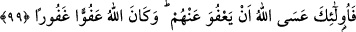

oldukları halde canları alınan kimselerden istisnâ edilmektedir. Çünkü o kimseler ya
mürteddirler veyâ gücü yettiği halde hicreti terkederek âsî olanlardır. Kâfirlerin baskısı
altında hor ve hakir duruma düşürülen bu güçsüz kişilerin ise hicret etmeye güçleri
yetmiyordu. Onun için onlar nefislerine zulmeden kimselere dâhil değildirler.
Şayet sen: “Burada müstesnâ olanlar her ne kadar kendilerinden istisnâ edildiklerine
dâhil olmasa da onların hükmüne girdiğinin vehmedilmesi gerekir. Oysa çocukların da
önceki âyette zikredilen “barınakları cehennemdir” hükmüne girmeyeceği bilindiğine
göre nasıl olur da çocuklar istisnâ edilenlerden sayılır?” dersen, ben bunu şöyle
cevaplarım:
Bu, hicreti terk etmekten sakındırma husûsunda mübalağadır. Mükellef olmayan
çocuklar da hicret etmeye güç yetirdiklerinde onlara da bunun vâcip olacağı îmâ
edilmektedir. Yine hicretten kaçış olmadığı, bülûğa erdiklerinde onlara vâcib olduğu,
hattâ güçleri yettiği takdirde büluğdan önce de onlara vâcipmiş gibi olduğu ve imkan
bulur bulmaz velîlerinin çocuklarla birlikte hicret etmeleri gerektiği bildirilmektedir.
Çâreye gücü yetmekten kasıt, hicret vâsıtalarını ve buna bağlı şeyleri bulmak
demektir. Yol bulmaktan kasıt ise hicret edilecek yerin yolunu ya kendisinin bilmesi, ya
da kendisine yol gösterecek delîlin olmasıdır.
99- İşte bunları, umulur ki Allah affeder; Allah çok affedicidir, bağışlayıcıdır.
“İşte bunları”, yâni zikredilen sıfatlara sâhip güçsüz kimseleri “umulur ki Allah
affeder.” Hicreti terketmenin tehlikeli bir durum olduğunu bildirmek için
“umutlandırma” ifâde eden “__WORD__” ve “__WORD__” lafzıyla zikredilmiştir. Hattâ mecbûren
hicret edemeyip kalan kimse kendisini güvende saymasın, hicret etmek için fırsat
kollasın ve kalbini ona bağlasın. “Allah çok affedicidir, bağışlayıcıdır.” Çok affedici
olmasının mânâsı, bağışlaması ve cezâlandırmaktan yüz çevirmesi demektir. Çok
bağışlayıcı olmasının mânâsı ise dünyâda ve âhirette kabâhatleri ve günahları
örtmesidir. Allah, affı kâmil, mağfireti tam olandır.
Sa’dî (k.s.) şöyle demiştir:
Allah perde arkasından görür, kötü amelleri de
Lütuf ve kereminden onların üzerine perde çeker
Bu âyette, insanın hangi sebeple olursa olsun dînini yaşama imkanı bulamadığı bir
yerden hicret etmesinin gerekliliğine irşad vardır. Peygamber Efendimiz (s.a.v)’in şöyle
buyurduğu rivâyet edilmiştir:
“Kim dîni için bir karış toprak da olsa bir yerden başka bir yere kaçarsa, kendisine